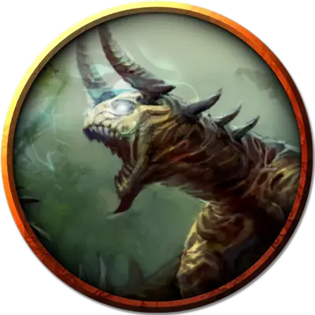

Заражённые паразитами бехир
Parasite-infested Behir
Огромная Нежить, нейтрально-злая

Класс Доспеха 17 (природный доспех)
Хиты 168 (16к12 + 64)
Скорость 50 футов, лазая 40 футов
| мод | спас | ||
|---|---|---|---|
| СИЛ | 23 | +6 | +6 |
| ЛОВ | 16 | +3 | +3 |
| ТЕЛ | 18 | +4 | +4 |
| мод | спас | ||
|---|---|---|---|
| ИНТ | 7 | −2 | −2 |
| МДР | 14 | +2 | +2 |
| ХАР | 12 | +1 | +1 |
Навыки Восприятие +6, Скрытность +7
Иммунитет к урону электричество
Чувства тёмное зрение 90 футов, пассивное Восприятие 16
Языки Драконий
Опасность 11 (7200 опыта)
Бонус мастерства +4
Действия
Мультиатака. Бехир совершает две атаки: одну укусом, и одну сжиманием.
Укус. Рукопашная атака оружием: +10 к попаданию, досягаемость 10 футов, одна цель. Попадание: Колющий урон 22 (3к10 + 6).
Сжимание. Рукопашная атака оружием: +10 к попаданию, досягаемость 5 футов, одно существо с размером не больше Большого. Попадание: Дробящий урон 17 (2к10 + 6) плюс рубящий урон 17 (2к10 +6). Цель становится схваченной (Сл высвобождения 16), если бехир пока не сжимает никакое существо. Пока цель схвачена, она опутана.
Электрическое дыхание (перезарядка 5–6). Бехир выдыхает молнию длиной 20 футов и шириной 5 футов. Все существа в этой линии должны совершить спасбросок Ловкости Сл 16, получая урон электричеством 66 (12к10) при провале, или половину этого урона при успехе.
Проглатывание. Бехир совершает одну атаку укусом по существу с размером не больше Среднего, схваченному им. Если эта атака попадает, существо становится проглоченным и перестает быть схваченным. Будучи проглоченным, существо ослеплено и опутано, и обладает полным укрытием от атак и прочих эффектов, исходящих снаружи бехира, и получает урон кислотой 21 (6к6) в начале каждого хода бехира. У бехира может быть проглочено только одно существо одновременно.
Любое существо, проглоченное заражённым паразитами бехиром, должно преуспевать в спасброске Телосложения Сл 19 в начале каждого хода бехира или станет поглощено кровяными паразитами, получая 36 (8к8) урона некротической энергией в случае провала и половину этого урона в случае успеха. (Этот урон идёт в дополнение к урону, полученному от пищеварительной кислоты бехира.) Если бехир станет целью для излечивающей болезни магии, это убьёт всех его кровяных паразитов.
Если бехир получает за один ход 30 или больше урона от проглоченного существа, бехир должен в конце этого хода преуспеть в спасброске Телосложения Сл 14, иначе отрыгнет существо, которое падает ничком в пространстве в пределах 10 футов от бехира. Если бехир умирает, проглоченное существо перестает быть опутанным им, и может высвободиться из трупа, потратив 15 футов перемещения, падая при выходе ничком.
Описание
Когда они ревут открыв пасти или испускают своё молниеносное дыхание, можно увидеть извивающихся в этих пастях тысячах серых паразитических кровяных червей.
Змееподобный бехир ползает по полу и лазает по стенам, чтобы схватить свою добычу. Его электрическое дыхание может сжечь большинство существ, а более сильных противников он сжимает, обернувшись вокруг них кольцами, и съедает заживо.
Внешне бехир похож на смесь чудовищной многоножки и крокодила. Его чешуйчатая шкура переливается от ультрамарина до темно-синего цвета, а на брюхе она голубая.
Пещерный хищник. Логова бехиров располагаются в недоступных другим существам местах, достичь которых можно только преодолев тяжелый подъем. Глубокие норы, пещеры в отвесных стенах скал и каверны, попасть в которые можно только по узким извилистым туннелям — все это идеальные места для засад бехиров. Дюжина ног бехира позволяет ему с легкостью добираться до своего логова. Когда он не лазает, он двигается ещё быстрее, сложив ноги вдоль туловища, и скользя как змея.
Проглотив свою жертву целиком, бехир впадает в дрему, пока полностью не переварит свою жертву. В это время он выбирает тихое место, где вторгшиеся в его владения враги не найдут его.
Враги драконов. Давным-давно великаны и драконы сошлись в, казалось бы, бесконечной войне. Штормовые великаны создали первых бехиров как оружие против драконов, поэтому ненависть к драконам у бехиров в крови.
Бехир никогда не устроит логово там, где обитает дракон. Если дракон попытается устроить логово в нескольких дюжинах миль от логова бехира, тот постарается либо убить дракона, либо прогнать его подальше. Только если дракон окажется сильнее бехира, тот отступит, чтобы найти новое место для логова себе.